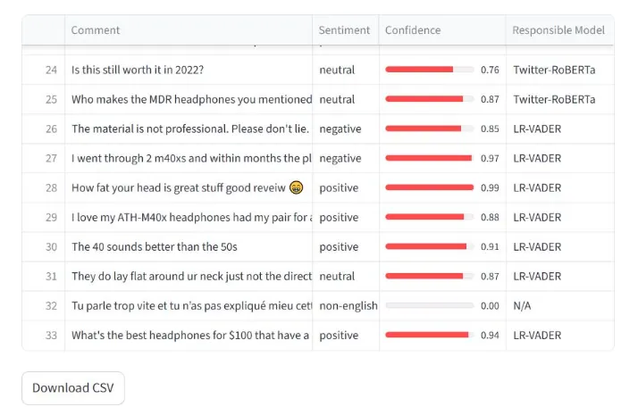
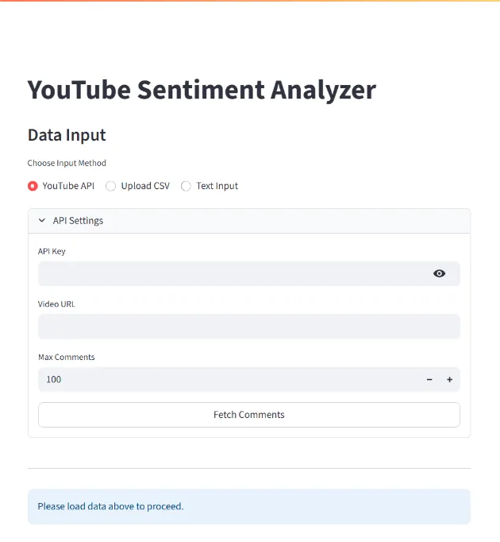
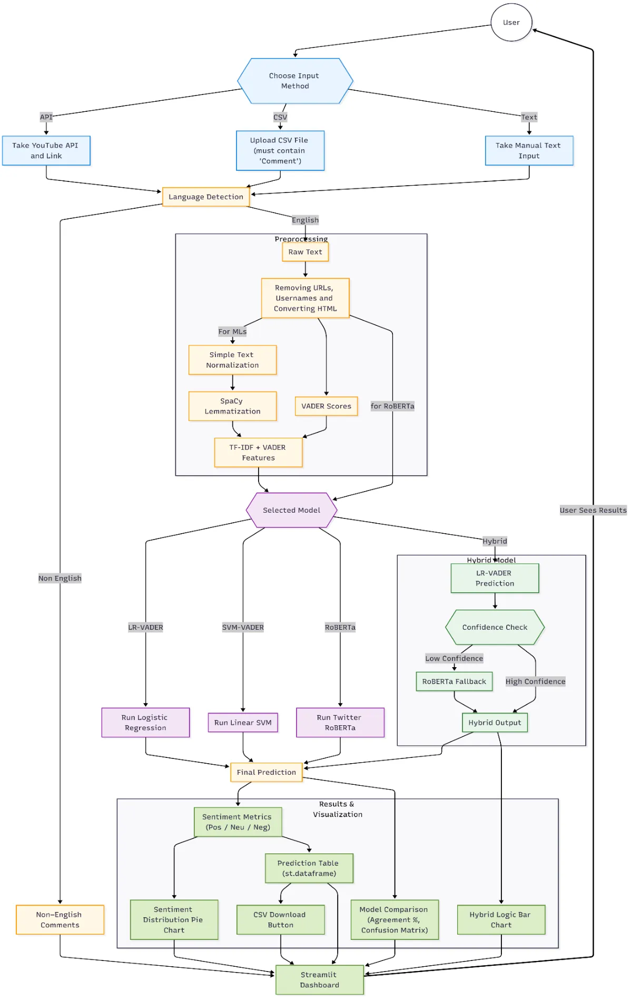

Featured project
YouTube Comment Sentiment Analysis
How closely can lightweight classifiers imitate a large transformer? Classic models improved with lexicon features and weak supervision, plus an app that analyses any video's comments.
- When
- Jun – Oct 2025
- Course
- BSc thesis, K. N. Toosi University of Technology
- Thesis grade
- 19.5 / 20

Overview
Three-class sentiment analysis (positive, neutral, negative) of social-media comments. Transformer models such as Twitter-RoBERTa are strong but heavy; the thesis asks how closely cheap classic models can imitate one, and which kind of extra data helps them most.
What I did
- Built a preprocessing pipeline: URL and mention normalisation, emojis converted to text, lemmatisation, and VADER sentiment-lexicon features.
- Collected extra YouTube comments with the YouTube Data API v3 and pseudo-labelled them with Twitter-RoBERTa (weak supervision). Also tested paraphrase-based augmentation with Gemma 3.
- Trained Logistic Regression and Linear SVM classifiers with the added VADER features and weakly supervised data.
- Built a Streamlit app that fetches up to 5,000 comments from a video or reads a CSV, runs several models side by side, and shows sentiment charts, agreement with Twitter-RoBERTa and confusion matrices. A hybrid mode uses the fast model and only falls back to Twitter-RoBERTa when its confidence is low.
Results
- Macro F1 against Twitter-RoBERTa's labels rose from 66.4% (Logistic Regression) and 65.1% (Linear SVM) to about 72.2%.
- Weak supervision helped more than paraphrase augmentation.
Gallery


